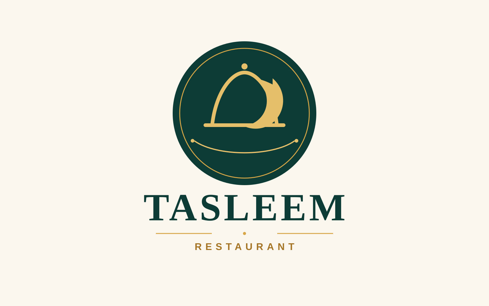
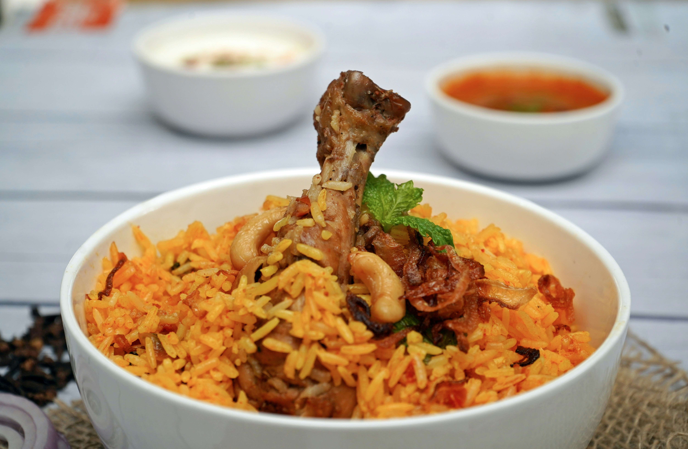
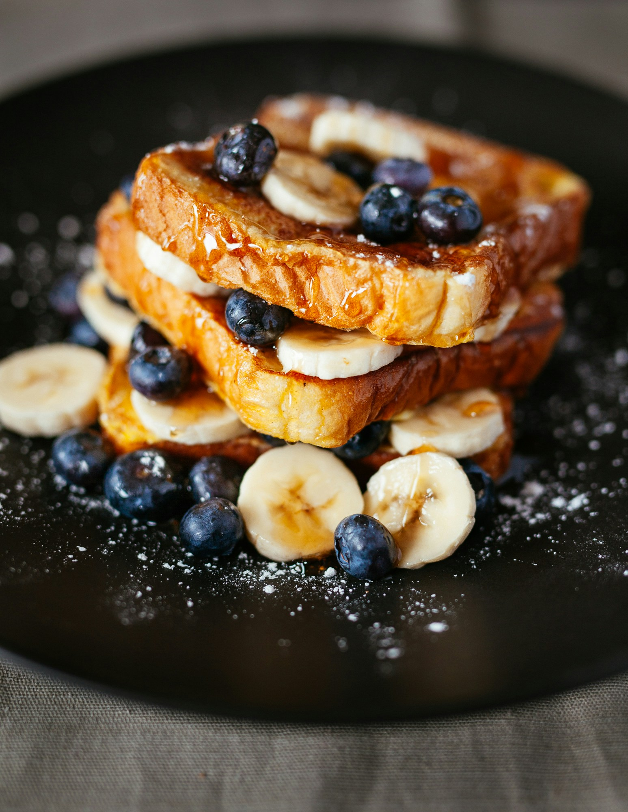

About us
We Provide The Best Food For You Al Flaivoria, we believe that food brings people together.
Our chefs craft cach dish with passion and the finest ingredients to give you an unforgettable dining experience

good food,good mood
welcome to tasleem restaurant,where we serve the best food with fresh incredients and love.


Biryani is special because it combines fragrant basmati rice, tender marinated meat, and a complex blend of warm spices into a single layered dish.

Vegetable rice is a mixed rice dish from India. It combines fragrant basmati rice, assorted vegetables, and aromatic spices.

A sandwich is a popular, portable food made with fillings like meat, cheese, vegetables, or sauces placed between two slices of bread, or inside a roll or flatbread.

Mutton Kanti Tikka | Mughal DarbarMutton tikka is a popular South Asian dish made with bite-sized chunks of boneless mutton (goat or lamb) marinated in yogurt, lemon juice, and warm spices like cumin, coriander, and chili powder.